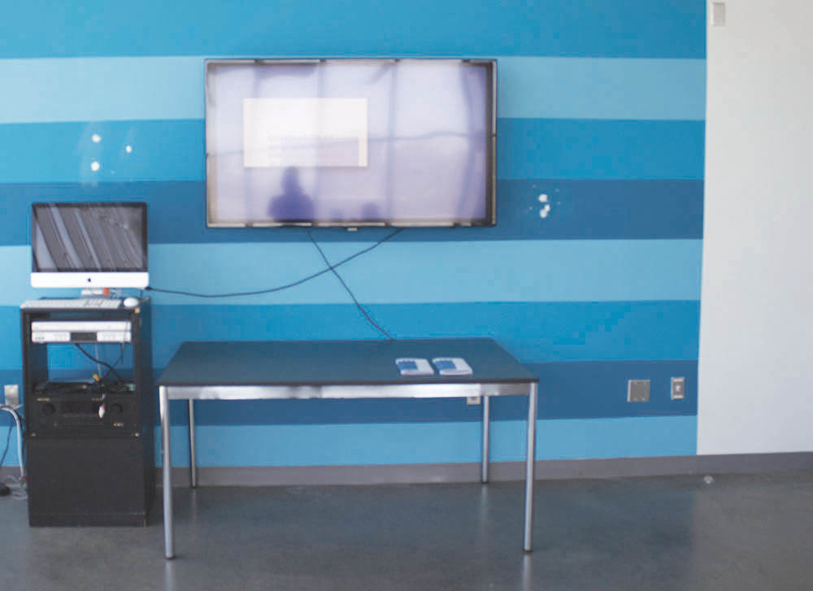
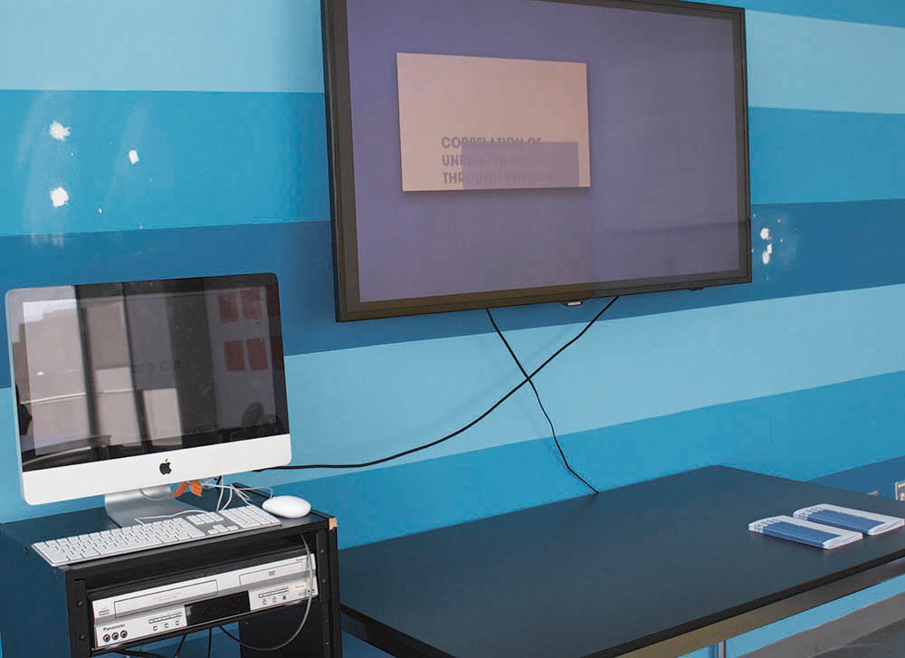

The evolution of pedagogy is, for the most part, viewed in relation to factors that are immediately applicable. This limits the possibility of a defined pedagogy to sustain itself, given the changes in an era of rapid globalization/growth. Looking into tangentially related fields is now essential and seems to be the logical step forward given the larger areas of overlap.
The purpose of this publication is to examine the relationship between a more “antiquated” view of pedagogical systems [1] and newer entrepreneurial endeavors, specifically in the IT sector [2].
The hope is that this will create new connections between the two fields, which have had to be sensitive to social, political, and economic changes, potentially providing a link to methodologies that have yet to be considered. It must be made clear that production of the study was done over the course of one week. This includes research, writing, and design. This is simply an introduction full of fallacies that will need to be addressed. I would like to think of this as a question, taking the form of a set of parameters, in which to think. Hopefully, through the physical production of these writings, which provide a broad insight into both fields, a new, more specific question will emerge. Something more tangible. Something that won’t get lost in vast space of open theoretical discussion, but instead can be applied in the physical reality it should occupy.


refrences
[1]
- Langeveld, M. J. "Disintegration and Reintegration of
- "Pedagogy"" International Review of Education 4.1
- (1958): 51-66. JSTOR.
- Dillabough, Jo-Anne. "The "Hidden Injuries" of Critical
- Pedagogy." Curriculum Inquiry 32.2 (2002):
- 2013-14. JSTOR.
[2]
- Adner, Ron, and Daniel Levinthal. "Demand
- Heterogeneity and Technology Evolution:
- Implications for Product and Process Innovation."
- Management Science 47.5 (2001): 611-28. JSTOR.
- Adomavicius, Gediminas, Jesse C. Bockstedt, Alok
- Gupta, and Robert J. Kauffman. "Making Sense of
- Technology Trends in the Information Technology
- Landscape: A Design Science Approach." MIS
- Quarterly 32.4 (2008): 779-809. JSTOR.